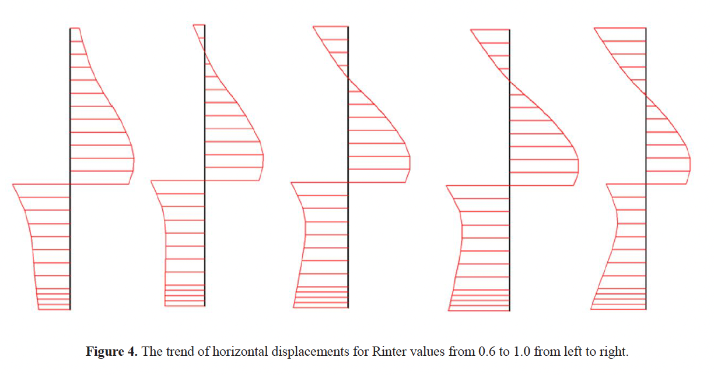

Introduction
Numerical modelling is a versatile, economical, and useful technique among the activities that exist for predicting
the performance of geotechnical structures. The modeling of mechanical behavior depends on many variables, therefore,
it should be reproduced or selected properly to make it as realistic as possible. However, controlling
the response of a geotechnical structure that depends on earth materials such as soil is a complex task,
because the soil is a heterogeneous material, with behaviors that can be erratic to some extent and that are governed
by different aspects defined by nature. This makes it a difficult material to represent through a physical-mathematical equation
immersed in a numerical method, in this case of study, the finite element method (FEM).
Depending on the geotechnical problem to be addressed, more or fewer variables can influence the analysis of the final simulation
results. In the case of anchored retaining structures supporting deep excavations, a typically passive condition of the containment
on the soil is generated, which directly influences the interface between both materials. Considering this position, clearly show us
the interaction between concrete and soil defined in the simulation software is a sensitive variable in the results.
The interface created by the FEM-based programs allows the production of interaction that is generated between two
materials. The simulation is developed by inserting a theoretical roughness value. Generally, this value acts as a decrease factor,
depending on the shear strength of the soil, since the interface is considered to be less resistant and more flexible than the
geo-material [1]. It is even possible to use residual reduction factors.
Of course, the choice of the reduction value is highly dependent on the constitutive model used in the modeling.
In traditional constitutive models based on elastoplasticity, the interface strength depends on the reduction factor.
However, more complex models, such as Hoek-Brown or modified Cam-Clay, have particularities when correctly assigning this value and
deserve more detailed analysis.
The simulations proposed in this work are developed on typically anchored excavations, with standard values for the stratigraphy of
the terrain. The main objective is to observe the evolution of the results when varying the parameters that influence the roughness
between the containment and the soil that simulates the interface between the two materials.
Importance of the Soil-Structure Interface Modelling
Not only the interface per se; but the way it’s stimulated by the software and even with the constitutive model used, ends up being an
essential factor that strongly influences the final result of the model, although the manufacturers insist that it’s not an aspect that
generates major concerns. However, each software takes into account the recommendations to consider when the interface is used to
simulate some kind of roughness between two surfaces. In this case the structure-floor interaction.
This interaction must be reproduced by a suitable variable. Without an interface between the structure and the soil, these two materials
would move together. This relative displacement which is naturally realistic, some programs call it slipping/gapping; is crucial in modeling
between structure and soil in an anchored excavation. By using an interface, even nodes are generated at the interface of the containment and
the soil. In this pair node, one of the nodes belongs to the structure and the other to the soil (Figure 1). In conventional modeling, the nodes
are simulated by elastoplastic springs that reproduce the vertical and horizontal movement. In other types of more complex constitutive models,
these springs adopt the essence of the constitutive law to simulate this behavior [2] - [7].
Already in the 80's of the previous century, when numerical modeling emerged as an important tool for prediction in engineering, it was mentioned
that the key aspects in a modeling process are the right choice of the constitutive law and the structure-soil interface [8].
Dong [9], highlights the relevance of the behavior of the interface in the global mechanical response of the structu-re-soil system. As mentioned
above, one of the classical ways is to consider the interface as a material with a tradi-tional friction model close to Mohr-Coulomb (perfectly
plastic elastic). Another alternative is to use the interface as a thin continuous element within the finite element mesh, assigning similar
properties to any of the materials involved.
In terms of friction values, it has been demonstrated through physical tests, that the structure-soil interface presents lower results than the shear
strength of the soil. This was developed by Potyondy [10], varying different aspects such as particle size distribution, humidity, load solicitation,
among others. Similarly, Boulon [11] and Boulon & Nova [12] through direct shear tests proved this response and generated a constitutive law of the
studied phenomenon.
The above is in the presence of laboratory tests. However, numerically, Powrie & Li [13], Day & Potts [14], [15], have used different techniques to analyze
the interface and its importance in numerical simulations. These include assigning a zero stiffness to interface elements and a shear modulus represented by
Mohr-Coulomb. Similarly, 2D elements of zero thickness have been used, affected by shear and normal forces that are connected by a problem-spe-cific
constitutive law to the normal and tangential deformations of the finite element. However, these ideas present numerical problems such as poor meshing,
drawbacks in the convergence of the solution, and critical stresses at the integration points between nodes of the finite element.
Nowadays, modern computer programs methods use based on contact surfaces, such as even nodes (Figure 1). The contact can be reproduced by traditional
constitutive models. There are even extensions to simulate allowable stres-ses, anisotropy, and friction coefficients.
In summary, according to Day & Potts [15] and Dong [9], the properties assigned to the interface influence the ground motion and deformation of
the structure. A realistic contact model must be selected to correctly reproduce these effects. Details of the relationship between
interface properties and the performance of anchored excavations are spo-radically reported in scientific publications.
Computational Model and Methods
A typical model of a deep excavation retained by a diaphragm wall (diaphragm) with a thickness of 60 cm is proposed. The containment is in the passive
condition through the installation of pre-stressed anchors. The stratigraphy is composed of different sandy strata that are distinguished by their
resistance values, as well as by the thicknesses between them. For this reason, the flow condition will be drained (see Figure 2).
The constitutive model used is Mohr-Coulomb for all strata and hence for the interface simulation which is calculated according to the soil properties
based on the following assumptions, where Rinter is the reduction factor of the interface strength [10], [11], [12], [1]:
This reduction value should always be assigned according to the recommendations of the software used and taking into account the constitutive model
of the soil on which it depends. Anchored retaining structures can have different types of interaction between the soil and other materials
of the retaining structure, usually, concrete is the most commonly used. So far, the direct influence of the reduction values has not been
fully studied. According to this uncertainty, this value was varied between 0.6 and 1.0 taking into account the interaction between sand and concrete
analyzed in Table 1, where the recommended values of the reduction factor for modeling the interface, according to the interaction with the material,
are shown.
In some cases modern software resorts to setting the reduction of the interface value as rigid in places of the modeling close to structural elements,
especially in 3D simulations. In the software used in this research, it is appropriate to use Rinter = 1.0 for this eventuality. In this case, the
interface will directly inherit the soil properties, including stiffness. The Poisson's ratio will not remain the same, since it depends on other
aspects, such as the drainage condition of the geotechnical problem.
As already mentioned, the interface interaction is less rigid than the adjacent soil, so this value is always less than 1, as shown in Table 1.
When there is high uncertainty of the value or there are materials with unknown interactions, the reduction factor can be associated with a value
close to 0.67 [1].
It is necessary to explain what physically happens with the interface from the point of view of the constitutive model. In states of elastic
stresses, both a motion parallel and perpendicular to the rough contact surface can happen. Motion that is perpendicular to the interface is
considered as a separation displacement, as a function of stress and stiffness normal to the surface. Parallel motion, on the other hand, is
simulated as sliding as a function of tangential stress and shear stiffness.
These equations must be used with care; because the stiffnesses are inversely proportional to the displacements, which can cause large
deformations at the interface or convergence problems in the result if extreme values are used. The selected software states that the
key aspect is the virtual thickness of the interface. This value is automatically selected by the program so that the stiffness obtained
is adequate.
Results and Discussion
This research aims to analyze the possible influence of the choice of the interface value, in an aspect that in the authors' opinion can be
quite sensitive in the results of an anchored excavation, in a typically passive condition. This aspect is the earth pressure on the retaining
structure. As the anchors are pre-stressed, this implies that the pressure of the containment on the soil increases the interaction between both
surfaces, especially near the position of the anchors. This fact makes the interface more sensitive to earth pressure values.
Indeed, in Figure 3 a very clear dependence can be observed between the value of the reduction factor to simulate the interaction of the interface
and the earth pressure on the concrete retaining structure. It is important to remember that the software recommends values between 0.6 and 1.0. The
reduction factor was evaluated in this range.
Referring to the presented results, when the value of reduction factor equal to one is chosen, the mechanical behavior of the interface is identical to
the soil. As the value is reduced the earth pressure decreases, but following the same qualitative trend.
This can be explained physically and according to the theoretical basis already presented, in the fact that the reduction factor makes the interface weaker
and more flexible than the soil. Being more flexible, there will be a greater relative displacement perpendicular to the interface. Therefore, the interaction
between the two materials will be less strong, which translates into less friction or roughness on the theoretical contact surfaces. This is strongly evidenced
in the results presented.
However, it is important to note that, in the earth pressure results, it is observed that the first meters present null values in this aspect.
The reason for this behavior is that the anchors, being pre-stressed, push the middle part of the containment towards the ground, generating a
quite high passive condition. This causes that in the first meters of the containment there is a certain separation between the soil and the
structure. This situation also tends to occur in the lower part of the excavation, although there it is more influenced by the embedment of the
structure (Figure 4).

Conclusions
The methodology used to model the interface is a crucial factor in this type of modeling. It must be taken into account
in detail, not only the value of the reduction factor that simulates the interaction at the interface but also the constitutive model of the
surrounding soil and even understands in detail the basically-mathematical basis proposed by the software to simulate the interface.
Indeed, the selection of the interface value is directly related to the numerical simulation results of the excavation. The earth pressure on
the wall is reduced because the lower reduction factor makes the interface more flexible. This is seen in the results obtained.
Containment structures typically in a passive condition may be more susceptible to be affected by the modeling of the interface. This passive
condition is generated by the presence of pre-stressed anchors that decrease the virtual thickness of the interface, producing a
stronger interaction between the two materials involved.
This is also evident in the places of the retaining structure that are far from the anchorages. At these points the soil tends
to move away from the structure, increasing the thickness of the interface and reducing its stiffness, thus reducing the earth pressure value.
Acknowledgements
The authors are grateful for the support provided by the Vice-Rectory of Research of the Universidad Militar Nueva Granada to this research,
reflected in the current article, through the project PIC-ING-2853.
References
[1] P. Plaxis, “2D Tutorial Manual 2017 Plaxis”, 1st ed., 2017.
[2] J.C. Ruge, “Analysis of the behaviour of pile curtain executed on porous metastable soil through the
use of a hypoplastic constitutive model considering the unsaturated response, PhD Thesis, Department of Civil
and Environmental Engineering”, University of Brasilia, 2014.
[3] J.C. Ruge, R.P. Cunha, J.E. Colmenares and C.C. Mendoza, “Class A prediction of a retaining structure made by
a pile curtain wall executed on a tropical soil”, DYNA, vol. 84, no. 202, pp. 278-288, 2017.
[4] M.C. Olarte and J.C. Ruge, “Analysis of numerical simulations on triaxial compression tests using different
constitutive models of the soil behaviour”, J. Phys.: Conf. Ser., vol. 1388, pp. 1-8, 2019.
[5] J.C. Ruge, “Artificial modelling of unsaturated tests considering the suction control on porous collapsible clay”,
J. Phys.: Conf. Ser., vol. 1386, pp. 1-8, 2019.
[6] J.C. Ruge, F. Molina-Gómez, J. Bastidas, R.P. Cunha and I. Otálvaro, “Partially saturation effect on fine sands and
earth pressure in a sheetpile wall”, Revista Int. Métodos Numéricos Cálc. Diseño Ing., vol. 35, no. 4, 2019.
[7] J.C. Ruge, E. Martínez, S. Bañol, J. León and F. Molina-Gomez, “Virtual modelling of stress paths CKoU and CKoD on
collapsible porous clayey soils”, Revista Int. Métodos Numéricos Cálc. Diseño Ing., vol. 36, no. 1, 2020.
[8] D.M. Potts and A. B. Fourie, "Behaviour of a propped retaining wall: Results of a numerical experiment", Geotechnique,
vol. 34, no. 3, pp. 383-404, 1984.
[9] Y. Dong, “Advanced Finite Element Analysis of Deep Excavation Case Histories. PhD Thesis”, University of Oxford, 2014.
[10] J. G. Potyondy, "Skin Friction between Various Soils and Construction Materials", Geotechnique, vol. 11, pp. 339-353, 1961.
[11] M. Boulon, "Basic features of soil structure interface behaviour", Computers and Geotechnics, vol. 7, no. 1-2, pp. 115-131, 1989.
[12] M. Boulon and R. Nova, "Modelling of soil-structure interface behaviour a comparison between elastoplastic and rate type laws", Computers and Geotechnics, vol. 9, no. 1-2, pp. 21-46, 1990.
[13] W. Powrie and E.S.F. Li, "Finite element analyses of an in situ wall propped at formation level", Geotechnique, vol. 41, pp. 499-514, 1991.
[14] R.A. Day and D.M. Potts, "Zero thickness interface elements - numerical stability and application", International Journal for Numerical & Analytical Methods in Geomechanics, vol. 18, no. 10, pp. 689-708, 1994.
[15] R.A. Day and D.M. Potts, "The effect of interface properties on retaining wall behaviour", International Journal for Numerical and Analytical Methods in Geomechanics, vol. 22, no. 12, pp. 1021-1033, 1998.

 Ingeniera Civil,
Ingeniera Civil,
 ORCID:
0000-0003-2048-7795.
Universidad Militar Nueva Granada, Bogotá, Colombia.
ORCID:
0000-0003-2048-7795.
Universidad Militar Nueva Granada, Bogotá, Colombia.